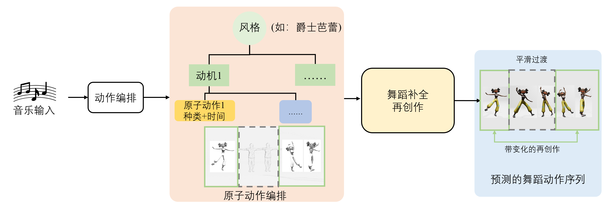

Music input -> Structrual Parsing -> Atomic movement planning -> Dance Completion
We show atomic movements in a prototype, which are similar but meanwhile various in details.
Locking style: arm stretch
Middle-hip-hop style: gliding, shuffle arms
The model generates a typical instance of Jazz-ballet. The textual descriptions of the atomic movements are summarized by an LLM. However, each of these induced atomic movements corresponds to an actual existing dance primitive: palms showing and waving corresponds to the Jazz dance movement Jazz hands; pricked turns correspond to the jazz-ballet pique turns; walk corresponds to the Jazz dance Jazz walk; jump with one leg extending corresponds to the jazz-ballet jeté; spin on the ground is a typical floor roll; extend one leg corresponds to the jazz-ballet tilt.
This example demonstrates the visualization of the edited dance sequence. We replace the original atomic movements at the semantic-event level, and observe that the resulting dance remains coherent and fluid.
This example demonstrates the visualization of the edited dance sequence. We are also capable of editing at a whole-motif level.